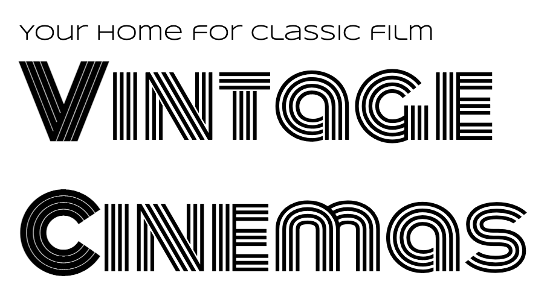

Proposals
I created two proposals during my graduate program, a movie theater project and a short film project.
Vintage Cinemas Proposal
The first is for a movie theater specializing in Vintage and Classic films (pre 1960).
Download as Word document.

Vintage Cinemas is a non-profit enterprise seeking to both preserve historic (pre-1950) films and present them to a popular audience in a comfortable, timeless atmosphere. A 50-seat theatre will be open to the public for viewings, lectures, and other programming. The design vision for the theater will be to recreate the look and feel of a vintage “movie palace” while keeping modern convenience and technology. The programming will be a blend of popular entertainment and historical lectures.
President - Rick Larsen: A lifelong fan of classic cinema in general, and comedy in particular. Rick brings a passion for film history and and a theatrical background to the project. Historian - Sam Fakenam: A history teacher which a background in researching the early 20th Century, Sam will serve as a part-time history consultant on the board. Educational Programs - Tommy Namefake: A veteran educator, Tommy will serve the board as its volunteer educational expert. Programming Director - José Pseudonym: José will coordinate with studios, libraries, and rights-holders to program and schedule the films shown in the theatre. Fundraising / Marketing Director: Debra Moneybags: Debra will coordinate fundraising activities and events as well as marketing. Chief Financial Officer - Karen Pennypincher: Karen will oversee financial governance, auditing, and compliance.
Film occupies a unique place in the history of American culture. It’s rise as an art form coincided with the growth of the nation. Many of the earliest groundbreaking films have already been lost to us, due to the fragile film stock used as well as a lack of understanding of them as unique cultural artifacts. Approximately 90% of films from the silent era have been lost. Preserving this rich historical tradition can teach us about the lives, culture, and times captured on film.
By giving the public the chance to see these films in a communal setting, Vintage Cinemas hopes to spark renewed interest in our historical legacy. Theis awareness would engender support for programs of film preservation for the most at-risk period in film history.
With the variety of programming available, the target market for this theater is broad, but there are some segments that will be of particular focus. First, lovers of older movies will appreciate the opportunity to see their favorites on a large screen. For this reason, we will try to find films that have a large modern fanbase as part of our selection. Another group would be history students or at least enthusiastic fans of pre-war history. Therefore, another selection criteria will be historical significance, such as firsts or movies featuring historical events. Another group is the casual movie fan, looking for a novel experience in moviegoing. For this group, finding movies with a modern connection could be a draw. For example, when an older movie is remade, it might be interesting to have a chance to screen the original.
The initial project for the first one to three years of the theater would be to build an audience for the types of films presented and grow that audience above sustainment levels for the theater. Memberships, special events, and group discounts.
In the longer term, the theater would also reach out to other organizations with historical or educational missions to see where efforts align and Vintage Cinemas could support their mission as well. For example, many westerns were filmed in Arizona and the theater could host a showing of some of them to raise awareness and funds for the Arizona Historical Society(https://arizonahistoricalsociety.org/).
In addition to traditional movie theater concessions, a gift shop could be used to sell merchandise related to the theater, its partners, and the films shown. Home Videos, books, and other items could be popular with visitors.
The types of competition faced by a theater of this type would most obviously be other movie theaters, most of which show contemporary new release films, which are a different type of experience than is provided by this historically-focused venue. In a broader sense, the theater will be competing with many other types of entertainment, but Vintage Cinema would offer a unique experience that would complement, rather than compete, with other forms of entertainment. Another form of competition is staying in and streaming these films at home. Currently, though, many of the titles that would be shown are hard to find on conventional home video outlets. And even when they are available, the experience of seeing them in a crowd is different from a home theater. Finding a location near restaurants and bars would give people the chance to make it into a complete outing.
The theater will be self-funded through ticket sales and concessions. Once operating costs are met, additional revenue will be donated to non-profits involved in film preservation efforts such as the National Film Preservation Society(https://www.filmpreservation.org/support/making-a-contribution). As additional fundraising, quarterly special events will be held as “pledge drives.” These will serve as both revenue generators and marketing the purpose of the theater.
The theater will be initially funded by a public crowdsourcing campaign with a targeted goal of $85,000. Once the location is secured and staffing in place, additional efforts will be made to win grants from arts and history foundations.
The primary startup expenses are in the rent and renovation costs to set up a functioning film theater. There will also be licensing costs to show films still in copyright and rental costs to show high-quality versions of films that are in the public domain. Most of the films will be shown in a digital format, which will lessen the costs associated with handling film. Daily operations can be supplemented with volunteer labor, where available, for box office and concessions.
initial (6 months) |
recurring annually |
||
Space Rental(yearly) |
50 seat theatre |
12000 |
24000 |
lobby space for concessions/ merchandise |
|||
Renovations |
20000 |
5000 |
|
Licensing |
12000 |
18000 |
|
Payroll |
12000 |
36000 |
|
Marketing |
10000 |
15000 |
|
Supplies |
Popcorn, etc |
2000 |
6000 |
| Revenue Source | Year 1 | Year 2 | Year 3 | Notes |
|---|---|---|---|---|
Ticket Sales |
67200 |
115200 |
112608 |
assuming 4 shows/week, growing attendance year over year |
Concessions |
40000 |
50000 |
60000 |
|
Grants/donations |
80000 |
100000 |
120000 |
|
Gross |
187200 |
265200 |
292608 |
|
Expenses |
104000 |
104000 |
104000 |
|
Net |
83200 |
161200 |
188608 |
The Sandwich Movie Proposal
The second proposal assignment was a crowd-sourcing project using https://indiegogo.com(indiegogo).
Download as a Word document
See the actual campaign(closed)
- The Project
-
The Greatest Sandwich Ever Sold is a short film project inspired by classic comedies on the 1930s and created by the members of the improvisational comedy duo Robot Destroyers from Outer Space. The project will be entirely crowdfunded and realized by a team of experienced comedy performers and artists. You can help bring this story to the screen. The plot of the story follows two bumbling restaurateurs whose last chance to save their sandwich store rests on a promotion to serve the world’s largest sandwich. No one is buying until one fateful day, when they are visited by the notoriously hard to please food critic who want to try the sandwich. Having never made it, the duo discover that their small kitchen may not be large enough for the world longest sandwich, but they will not give up on their dream. Inspired by classic short subjects of Hollywood but updated to present day and integrating improvisational techniques and influenced by clown practice, the film will be an all-new blend of comedy styles. The filmmakers pay homage to the films of Laurel and Hardy, Jacque Tati, and Rowan Atkinson’s Mr. Bean series.
- The Writers/Directors
-
Performing together as Robot Destroyers from Planet Earth since 2010, Arturo Ruiz and Tommy Cannon have nearly a long history together and separately performing improv and sketch comedy around the country. Their Live show is an energetic blend of physical comedy and smartly observed characters. They wrote the script for this project with director Rick Larsen, who has been writing, performing and creating comedy since the late 1990s. Between the three of them, they have created live theatre sketch revues, comics, podcasts, and multiple web video series. He is a walking encyclopedia of Marx Brothers and Laurel and Hardy trivia.
- Supporting Cast
-
Tommy and Arturo will be starring as the proprietors of the Gilbert’s Sandwich shop, the home of the world’s greatest sandwich. Greg Jarvis (critic) is a veteran improvisor and performer who brings his unique energy to his role as a pompous restaurant critic. He has a long history of performing on the stage and film and has been in various previous productions with the cast of this film. Jon Jahrmarkt (waiter) is a stage actor and improvisor with credits in the 39 Steps and the improv groups Apollo 12 and Galapagos
- Art Director
-
Dain Gore is an artist and a teacher known for elaborate puppetry-inspired live shows and a strong sense of visual design. His sets and props for The Greatest Sandwich Ever Sold create the unique look of the film.
- Editor and Director of photography
-
Bill Binder has been performing and teaching improvisation since 1999. He has edited multiple web series and online video projects. A talented performer in his own right, he has recently been directing web videos for the improv group Apollo 12.
Improvmania theatre in Chandler, Arizona is home to some of the most talented improvisors around. The theatre will be transformed into a sandwich shop for the shooting of this film.
- Funding Goal
-
We believe we can deliver this film for a budget of $1000. This includes the cast, crew, location, and props. Our philosophy in developing this project is to be able to pay the artists who work both in front of the camera and behind it a fair wage for the creative work they do. We built our budget goals with the simple guideline of paying everyone who works on this film a minimum of $15 per hour. We then set a stretch goal for raising above our funding goals and most of that will be invested back into the people who make this film possible.
Much of the preproduction work for the story and script film has been done or will be done during the time this fundraiser is open. Once the funding is secure, the physical construction can commence and will take approximately two weeks. The shooting schedule will take one day, with a second day reserved for any reshoots that make be required. Editing will take a further two weeks, and then the project will be ready for screening.
SWOT analysis
Download as Word document.
Strength Solid, talented team Modest goal financially, small budget Location and equipment donated/borrowed |
Weakness Will be a side project for everyone involved Relatively unknown cast / crew - no famous names |
Opportunity Have open schedule for many crew members if we can film in the late fall, early winter Have interest from local audience to get some initial views Strong connections to local theater communities can help to cast extras / minor parts |
Threats Crowdfunding may not hit targets May not get in front of necessary audiences Movie might be bad |
-
Strengths: Raise enough to pay all on team a fair price for their involvement to increase commitment.
-
Weakness: Keeps story, location, and scope of film small to avoid overcommitment; keep track of schedule and stick to plan
-
Opportunity: Start project soon, to ensure needed people are available
-
Threats: Strive to stay under budget while keeping quality standards high. Maybe do a live read of the script for a test audience to ensure work is connecting with people.